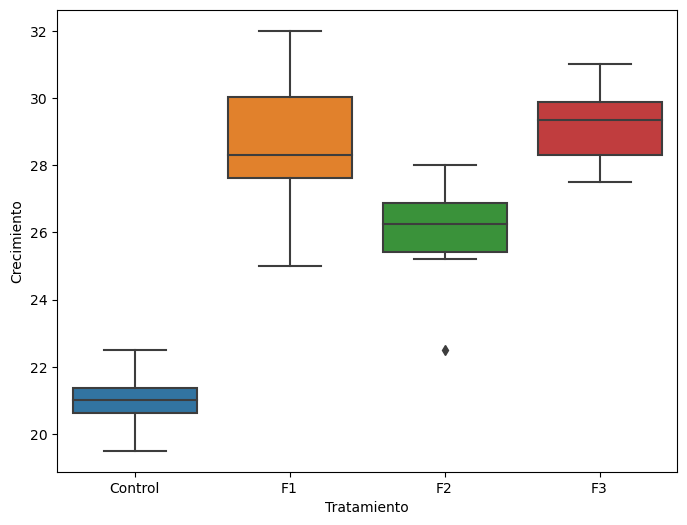
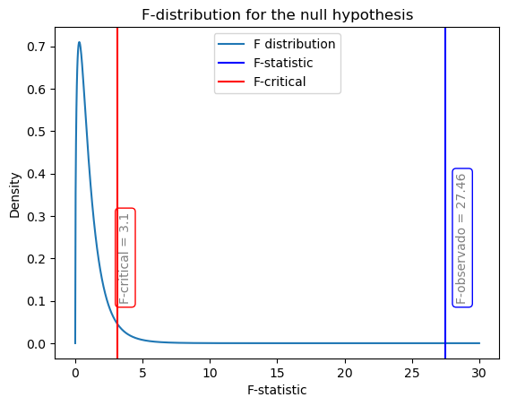
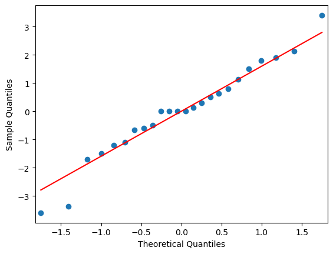
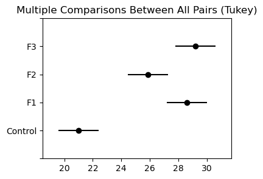
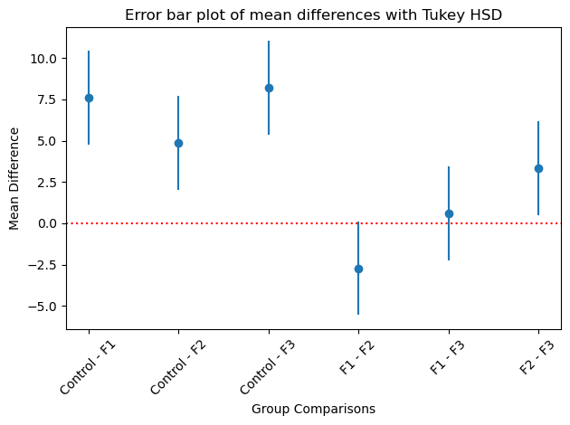

import pandas as pd# Queremos medir si tres tipos de fertilizante promueven el crecimiento de una planta.datos = pd.DataFrame({'Control': [21, 19.5, 22.5, 21.5, 20.5, 21],'F1': [32, 30.5, 25, 27.5, 28, 28.6],'F2': [22.5, 26, 28, 27, 26.5, 25.2],'F3': [28, 27.5, 31, 29.5, 30, 29.2]})# a este formato de datos le llaman 'wide' formatdatos.shape
import seaborn as snsimport matplotlib.pyplot as pltimport scipy.stats as statsimport numpy as npplt.figure(figsize=(8, 6))sns.boxplot(x='Tratamiento', y='Crecimiento', data=datos_long)

import statsmodels.formula.api as smfimport statsmodels.api as smanv = smf.ols('Crecimiento ~ Tratamiento', data=datos_long).fit()print(anv.summary())
El estadístico F de 27.46 proviene de la varianza del modelo dividida entre la varianza del modelo entre la varianza del residuo. Esto se obtiene, como vimos, descomponiendo las sumas de cuadrados.
En donde \(k\) es el número de factores, \(n_j\) es el número de observaciones en el grupo \(j\), \(\bar{y}\) es la media total y \(y_{ij}\) es la respuesta en la observación \(i\) del grupo \(j\).
Se llama suma de cuadrados total (\(SS_T\)) a la suma de cuadrados entre los grupos (\(SS_G\)) y la suma de cuadrados dentro de los grupos (\(SS_W\)). Matemáticamente, se expresa así:
\[SS_T = SS_G + SS_W\]
En ocasiones, el \(SS_W\) se denomina suma de cuadrados residual (\(SS_R\)) o suma de cuadrados de error (\(SS_E\)). Básicamente, captura la variación que no se explica por los factores (que sería \(SS_G\) o también llamada suma de cuadrados del modelo, \(SS_M\)).
Se calcula la suma de cuadrados entre los grupos (\(SS_G\)) y la suma de cuadrados dentro de los grupos (\(SS_W\)) con las fórmulas siguientes:
Donde \(k\) es el número de factores, \(n_j\) es el número de observaciones en el grupo \(j\), \(\bar{y}_j\) es la media de las respuestas en el grupo \(j\) y \(y_{ij}\) es la respuesta en la observación \(i\) del grupo \(j\).
La \(SS_G\) será grande si la diferencia \(\bar{y}_j - \bar{y}\) es grande. Cuanto más grande sea \(SS_G\), mayor será el porcentaje de variación que se explica por los factores, por lo que tenemos más evidencia en contra de \(H_0\). La \(SS_W\) será grande si la diferencia \(y_{ij} - \bar{y}_j\) es grande. Cuanto más grande sea \(SS_W\), menor será el porcentaje de variación que se explica por los factores.
La varianza entre los grupos (\(MSG\), también conocida como \(MSE_M\)) y la varianza dentro de los grupos (\(MSW\) o conocida también como \(MSE_R\)) se calcula con \[MSG = \frac{SSG}{k-1}\]\[MSW = \frac{SSW}{N-k}\] Donde \(k\) es el número de factores y \(N\) es el número de observaciones.
El valor F es una medida de la variación entre los grupos dividida por la variación dentro de los grupos. Considera que la variación entre los grupos es la variación que se explica por los factores y la variación dentro de los grupos es la variación que no se explica por los factores. Matemáticamente, se expresa como:
\[F = \frac{MSG}{MSW}\]
En los resultados de statmodels, el mse_model corresponde a nuestro \(MSG\) (la varianza explicada por el tratamiento) y mse_resid corresponde a nuestro \(MSW\) (la varianza no explicada por el tratamiento).
N = datos_long.shape[0]k =4error_total = anv.mse_total * (N -1) # porque tiene N -1 grados de libertaderror_modelo = anv.mse_model * (k -1) # porque tiene k-1 grados de libertaderror_residual = anv.mse_resid * (N - k) # porque tiene N-k grados de libertadprint(f' Error total {error_total.round(2)}, es la suma de el residual + el modelo = {error_modelo.round(2) + error_residual.round(2)}')
Error total 312.47, es la suma de el residual + el modelo = 312.47
F_obs = anv.mse_model/anv.mse_residF_obs
27.464773347897328
1- stats.f.cdf(F_obs, k -1, N - k)
2.711994409043683e-07
# plot the F distribution for the null and add the F_stat in blue and the F_critical at 5% in red.# The null is that the groups have the same mean, so the F-statistic should be close to 1.F_critical = stats.f.ppf(0.95, k -1, N - k)F_quantiles = np.linspace(0, 30, 1000)F_pdf = stats.f.pdf(F_quantiles, k -1, N - k)plt.plot(F_quantiles, F_pdf, label="F distribution")plt.axvline(F_obs, color="b", label="F-statistic")plt.axvline(F_critical, color="r", label="F-critical")plt.title("F-distribution for the null hypothesis")plt.xlabel("F-statistic")plt.ylabel("Density")# annotate the text of the F-critical and F-statistic values vertically within bboxplt.text(F_critical*1.05, 0.1, f'F-critical = {F_critical.round(2)}', rotation=90, bbox=dict(facecolor='none', edgecolor='r',boxstyle='round'), alpha=0.5)plt.text(F_obs*1.03, 0.1, f'F-observado = {F_obs.round(2)}', rotation=90, bbox=dict(facecolor='none', edgecolor='b',boxstyle='round'), alpha=0.5)plt.legend()

Comprobando asunciones
res = anv.residfig = sm.qqplot(res, line='s') # 's' indica una línea de referencia ajustada a la muestra

El gráfico sugiere que la distribución de los residuos (o errores) no es diferente a la de una distribución normal con media de 0. Sin embargo, para estar seguros, podemos correr una prueba de Shapiro-Wilk.
# Normalidad de los residuos usando la prueba de Shapiro-Wilkshapiro_test = stats.shapiro(anv.resid)print(shapiro_test)
El valor \(p\) sugiere que, a un nivel de significancia de 0.05, no se puede descartar la hipótesis de que los residuos tengan una distribución normal.
Para probar que la varianza es homogénea entre los grupos, realizamos una prueba de Levene.
# Homogeneidad de varianzas usando la prueba de Levenelevene_test = stats.levene(datos_long['Crecimiento'][datos_long['Tratamiento'] =='Control'], datos_long['Crecimiento'][datos_long['Tratamiento'] =='F1'], datos_long['Crecimiento'][datos_long['Tratamiento'] =='F2'], datos_long['Crecimiento'][datos_long['Tratamiento'] =='F3'])# Resultadoslevene_test
En la prueba de Levene, la hipótesis nula a probar es la de igualdad de varianzas. Es decir, rechazamos esa hipótesis solo si obtenemos un valor \(p\) por debajo de un nivel de significancia (e.g., 0.05). Como obtuvimos un valor \(p\) mayor, concluimos que no tenemos evidencia para rechazar que los grupos tengan la misma varianza.
Ya que probamos que el análisis cumple con los supuestos del ANOVA, y que nuestra ANOVA mostró diferencias significativas entre los grupos, procedemos a encontrar en qué grupos suceden las diferencias.
El análisis de varianza nos dice que hay una diferencia significativa entre los grupos, pero no nos dice cuál grupo es diferente.Para saberlo, se debe realizar un análisis de comparación de medias.
Para la comparación múltiple podemos usar el HSD (honest significant difference) de Tukey. Consiste en comparar cada grupo con el resto de los grupos.
¿Por qué no simplemente comparamos entre los grupos usando, por ejemplo, pruebas \(t\)? Eso es porque los datos provienen de una sola muestra y estaremos comparando simultáneamente diferentes hipótesis. Recordar cuáles son esas hipótesos:
\[
H_0: \mu_1=\mu_2=\dots=\mu_k; H_a=\mu_i\neq\mu_j,\quad \text{para al menos un } i\neq j
\]
Cada desigualdad en la hipótesis alternativa puede ser tratada como una hipótesis diferente. Por ejemplo, \(\mu_1\neq \mu_2\) y \(\mu_1 \neq \mu_3\) serían dos hipótesis separadas y simultáneas. Usar un mismo valor \(p\), por ejemplo \(p<0.05\) como criterio de aceptación sería erróneo dado que ese \(p<0.05\) sería para una sola hipótesis. Esto nos llevaría a algo conocido fomo Familywise error rate (FWER), que es una tasa de error a la que incurrimos cuando probamos \(n\) hipótesis sin controlar para el valor \(p\).La tasa de errores se calcula como
\[
FMER = 1 - (1-\alpha)^n
\]
Si, por ejemplo, tenemos \(n=5\) hipótesis y un \(\alpha=0.05\), el error ya no sería \(0.05\) sino \((1-(1-\alpha)^5=0.226\). Esto sinifica que si no ajustamos el valor \(p\) para cada prueba, tendríamos un erro de más del 22%. Es decir, estaríamos rechazando una hipótesis nula de no diferencias en más de 1/5 casos, cuando originalmente queríamos una tasa de error de menos de 1/20 casos (nuestro 0.05). Para mantener el error global en 0.05, tenemos que hacer ajustes al valor p.
Otra forma de probar las hipótesis es calcular el HSD de Tukey y compararlo con el HSD crítico, lo que mantiene el FWER por debajo del nivel de significancia elegido (0.05). El HSD crítico se calcula con la siguiente fórmula:
En donde \(\hat{y}_{i}\) es la media de las respuestas en el grupo \(i\), \(\hat{y}_{j}\) es la media de las respuestas en el grupo \(j\), \(n_j\) es el número réplicas por grupo (la cantidad de observaciones por cada grupo), \(MSE\) es el error cuadrático medio (en nuestro ejemplo corresponde a anv.mse_resid), y \(q_{\text{crit}}\) es el valor crítico de la distribución estudentizada de rango múltiple.
El \(q_{\text{crit}}\) es el valor crítico de la distribución de rango estudentizada. Es difícil calcular manualmente el \(q_{\text{crit}}\). Por lo tanto, se puede usar la tabla de Tukey para obtener el \(q_{\text{crit}}\).
La clave del HSD es el valor \(q_\text{crit}\). Éste considera:
El número total de comparaciones que se están realizando.
El número total de observaciones en el análisis.
El nivel de significancia deseado (por ejemplo, α=0.05).
Por lo tanto, cuando calculamos el valor crítico de Tukey HSD usando la distribución de Studentizada de rango múltiple, estamos utilizando una distribución que proporciona rangos de valores críticos más estrictos o mayores comparados con los que se obtendrían en una prueba \(t\) para una sola comparación. Esto se debe a que esta distribución ajusta los valores críticos para mantener la FWER al nivel de \(\alpha\) deseado para todas las comparaciones posibles, no solo para una individual.
Entonces, incluso si hacemos múltiples comparaciones, la distribución asegura que el umbral para rechazar la hipótesis nula es más alto, lo que hace que sea más difícil obtener un resultado estadísticamente significativo por casualidad.
Para realizar la prueba de HSD de Tukey, cargamos statsmodels.stats.multicomp para realizar comparaciones múltiples.
datos_long.shape
(24, 2)
import statsmodels.stats.multicomp as multitukey = multi.pairwise_tukeyhsd(datos_long.Crecimiento, datos_long.Tratamiento, alpha=0.05)tukey.summary()
Multiple Comparison of Means - Tukey HSD, FWER=0.05
group1
group2
meandiff
p-adj
lower
upper
reject
Control
F1
7.6
0.0
4.7771
10.4229
True
Control
F2
4.8667
0.0006
2.0437
7.6896
True
Control
F3
8.2
0.0
5.3771
11.0229
True
F1
F2
-2.7333
0.0599
-5.5563
0.0896
False
F1
F3
0.6
0.9324
-2.2229
3.4229
False
F2
F3
3.3333
0.0171
0.5104
6.1563
True
Como podemos ver, tenemos \(k^2\) comparaciones. La tabla muestra la diferencia entre Control y F3 como la diferencia mayor (con un meandiff de 8.2), seguida de la comparación entre Control y F1 (meandiff=7.6). La última columna nos indica si tenemos que rechazar la hipótesis de no diferencias. Siempre que la diferencia entre dos grupos sea significativa, rechazamos la nula de no diferencias. Notar que las columnas lower y upper muestran un rango de valores en donde meandiff cae. Cuando ese rango contiene al 0 (por ejemplo, en F1 vs V2 el rango es [-5.5, 0.089]) reject es False. El intervalo compuesto por [lower, upper] es conocido como intervalo de confianza.
Solo para completar, los valores relevantes de los que hemos hablado, como HSD y \(q_\text{crit}\), se pueden obtener fácilmente.
En nuestro caso, nuestro \(n_j=6\), que es la cantidad réplicas por grupo (o la cantidad de observaciones que tenemos por grupo).
hsd = tukey.q_crit * np.sqrt(anv.mse_resid /6)hsd
2.822935281447719
Notar que siempre que el valor absoluto de meandiff es menor o igual a \(\text{HSD}\), se acepta la nula (reject es False).# Plot the results tukey.plot_simultaneous()
# Plot the transposed data with tukey.plot_simultaneous()tukey.plot_simultaneous(figsize=(4, 3))plt.show()

Ahora, hacer un gráfico con los intervalos de confianza de las diferencias.
df_tukey_summary['GroupDiff'] = df_tukey_summary['group1'] +' - '+ df_tukey_summary['group2']# alternativamente ["{} - {}".format(row[0], row[1]) for row in tukey_summary.data[1:]]df_tukey_summary
group1
group2
meandiff
p-adj
lower
upper
reject
G1 - G2
GroupDiff
0
Control
F1
7.6000
0.0000
4.7771
10.4229
True
Control - F1
Control - F1
1
Control
F2
4.8667
0.0006
2.0437
7.6896
True
Control - F2
Control - F2
2
Control
F3
8.2000
0.0000
5.3771
11.0229
True
Control - F3
Control - F3
3
F1
F2
-2.7333
0.0599
-5.5563
0.0896
False
F1 - F2
F1 - F2
4
F1
F3
0.6000
0.9324
-2.2229
3.4229
False
F1 - F3
F1 - F3
5
F2
F3
3.3333
0.0171
0.5104
6.1563
True
F2 - F3
F2 - F3
# Calculate the error marginserrors = [df_tukey_summary['meandiff'] - df_tukey_summary['lower'], df_tukey_summary['upper'] - df_tukey_summary['meandiff']]# Create the scatter plot with error barsplt.errorbar(x=range(len(df_tukey_summary)), y=df_tukey_summary['meandiff'], yerr=errors, fmt='o')# Set the x-tick labels to your groups, rotated for better readabilityplt.xticks(range(len(df_tukey_summary)), df_tukey_summary['GroupDiff'], rotation=45)# Adding labels and title for clarityplt.xlabel('Group Comparisons')plt.ylabel('Mean Difference')plt.title('Error bar plot of mean differences with Tukey HSD')plt.axhline(y=0,color='r', linestyle=':')# Show the plotplt.tight_layout() # Adjust layout for better fitplt.show()

Actividades
Un laboratorio llevó a cabo 6 mediciones de alquitrán en tres marcas de cigarro conocidas. Sus resultados se muestran a continuación
Muestra
Marca A
Marca B
Marca C
1
10.21
11.32
11.60
2
10.25
11.20
11.90
3
10.24
11.40
11.80
4
9.80
10.50
12.30
5
9.77
10.68
12.20
6
9.73
10.90
12.20
Realiza análisis exploratorio de las variables. Puedes elegir entre histogramas o boxplots.
Convierte los datos en formato long.
Realiza un análisis de varianza usando OLS de statmodels.
¿Qué marca fue usada como referencia (intercepto en el modelo)? ¿Cuál es el promedio estimado de alquitrán en cada marca? Usa los estimadores del modelo de OLS.
Comprueba las asunciones: normalidad de los residuos (qq-plot y test de Shapiro-Wilks) y homocedasticidad (test de Levene).
Concluye si el ANOVA es significativo, y menciona qué significa eso.
Si el ANOVA resulta significativo, realiza un análisis de seguimiendo usando el HSD de Tukey.
Concluye a partir de las diferencias observadas. Responde preguntas como ¿qué marca tiene más alquitrán?, ¿qué marcas tienen alquitrán parecido?, ¿entre qué marcas existe la mayor diferencia?
data = {'Brand A': [10.21, 10.25, 10.24, 9.80, 9.77, 9.73],'Brand B': [11.32, 11.20, 11.40, 10.50, 10.68, 10.90],'Brand C': [11.60, 11.90, 11.80, 12.30, 12.20, 12.20]}# Creamos el DataFrame con los datosdf_alquitran = pd.DataFrame(data, index=[1, 2, 3, 4, 5, 6])df_alquitran
/home/mrrobot/anaconda3/lib/python3.10/site-packages/scipy/stats/_stats_py.py:1736: UserWarning: kurtosistest only valid for n>=20 ... continuing anyway, n=18
warnings.warn("kurtosistest only valid for n>=20 ... continuing "
OLS Regression Results
Dep. Variable:
Alquitran
R-squared:
0.193
Model:
OLS
Adj. R-squared:
0.086
Method:
Least Squares
F-statistic:
1.797
Date:
Mon, 13 Nov 2023
Prob (F-statistic):
0.200
Time:
17:21:02
Log-Likelihood:
-35.247
No. Observations:
18
AIC:
76.49
Df Residuals:
15
BIC:
79.17
Df Model:
2
Covariance Type:
nonrobust
coef
std err
t
P>|t|
[0.025
0.975]
Intercept
10.0000
0.767
13.040
0.000
8.365
11.635
Marca[T.Brand B]
1.4136
1.084
1.303
0.212
-0.898
3.725
Marca[T.Brand C]
2.0000
1.084
1.844
0.085
-0.312
4.312
Omnibus:
16.319
Durbin-Watson:
2.809
Prob(Omnibus):
0.000
Jarque-Bera (JB):
25.683
Skew:
-1.138
Prob(JB):
2.65e-06
Kurtosis:
8.391
Cond. No.
3.73
Notes: [1] Standard Errors assume that the covariance matrix of the errors is correctly specified.
res = anv_alquitran.residfig = sm.qqplot(res, line='s') # 's' indica una línea de referencia ajustada a la muestra